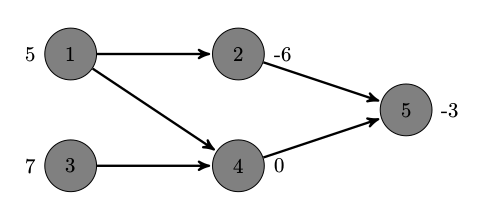
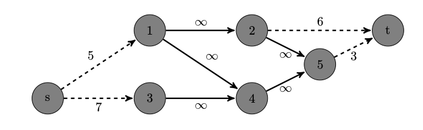

概念
对于有向图 $G=(V,E)$，其中 $V$ 为 $G$ 的点集，$E$ 为 $G$ 的边集。
- 割集: 一个 $s$–$t$ 割 $[S,T]$ 是 $V$ 的一种划分，使得 $s\in S$、$t\in T$
- 最小割: 一个 $s$–$t$ 割的容量是 $\displaystyle c(S,T) = \sum_{(\mu,\nu) \in (S\times T)\bigcap E} c(\mu,\nu)$；容量最小的割集称为最小割
- 简单割：若一个 $s$–$t$ 割满足割中的每条边都只与源点 $s$ 或汇点 $t$ 相连，则称该割为简单割
- 闭合图：若点集 $V’ \in V$ 是一个闭合图，那么对于 $\forall \left< \mu, \nu\right > \in E$，若 $\mu \in V’$ 则必有 $\nu \in V’$
- 最大权闭合图： 一个点权和最大的闭合图 
上图中，有 9 个闭合图（含空集）：$\emptyset$，$\lbrace 3,4,5 \rbrace$，$\lbrace 4,5 \rbrace$，$\lbrace 5 \rbrace$，$\lbrace 1,2,4,5 \rbrace$，$\lbrace 2,5 \rbrace$，$\lbrace 2,4,5 \rbrace$，$\lbrace 2,3,4,5 \rbrace$，$\lbrace 1,2,3,4,5 \rbrace$。其中，惟一的最大权闭合图为 $\lbrace 3,4,5 \rbrace$，且权和为 4。
最大流最小割定理
设 $f$ 为流网络 $G=(V,E)$ 中的一个流, 该流网络的源节点为 $s$, 汇点为 $t$, 则下面的条件是等价的:
- $f$ 是 $G$ 的一个最大流
- 残流网络 $G_f$ 不包含任何增广路径
- $|f|=c(S,T)$, 其中 $[S,T]$ 是流网络 $G$ 的最小割
构造
将原图转化为网络 $N=(V_N, E_N)$：
- 将原图中的所有有向边 $\left< \mu, \nu\right > \in E$ 替换为容量为 $c(\mu,\nu)=\infty$ 的有向边 $\left< \mu,\nu \right > \in E_N$
- 在此基础上增加源点 $s$ 和汇点 $t$
- 由源点向原图中的所有正权点 $\nu(\omega_\nu > 0)$ 连接一条容量为 $c(s,\nu)=\omega_\nu$ 的有向边 $\left< s,\nu \right > \in E_N$
- 由原图中的所有负权点 $\nu(\omega_\nu < 0)$ 连接一条容量为 $c(\nu,t)=-\omega_\nu$ 的有向边 $\left< \nu,t \right > \in E_N$
也就是
\begin{align}
&V_N=V \bigcup \lbrace s,t \rbrace \
&E_N=E \bigcup \big\lbrace \left< s,\nu \right> \big| \nu\in V, \omega_\nu > 0 \big\rbrace \bigcup \big\lbrace \left< \nu,t \right> \big| \nu\in V, \omega_\nu < 0 \big\rbrace \
&\left \lbrace \begin{aligned}
&c(\mu,\nu)=\infty & \left< \mu,\nu \right> \in E \
&c(s,\nu)=\omega_\nu & \omega_\nu > 0 \
&c(\nu,t)=-\omega_\nu & \omega_\nu < 0
\end{aligned} \right.
\end{align}
这里 $\displaystyle \infty > \sum_{\nu \in V} \big| W_\nu \big|$。
原图 $G$ 构成的网络 $N$ 如下图

先给出结论：
若
- 原图所有正权点的点权和为 $totalval$
- 对该网络跑最大流，且最大流为 $maxflow$， 所得到的最小割为 $[S,T]$
那么
- 原图的最大权闭合图的权和为 $totalval-maxflow$
- 并且，$S-\lbrace s \rbrace$ 为原图点数最少的最大权闭合图
证明
【引理 1】 本问题的网络 $N$ 中，最小割是简单割。
简单地说明一下，由于除与源点 $s$ 或汇点 $t$ 直接相连的边的容量是有限的，其它边是无限的，那么最小割中显然不会出现容量为无限的边（因为强行割断所有与源点相连的边可以构成一个割集，且割的容量是有限的，最小割的容量不会比这个大），所以该最小割是简单割。
记 $G_1$ 是原图 $G$ 的一个 闭合子图，$V_1$ 为 $G_1$ 的点集；$\overline{V_1}$ 为点集 $V_1$ 在原图 $G$ 中的补集，即 $V_1 \bigcup \overline{V_1}=V$。
【引理 2】 网络 $N$ 的简单割 $[S,T]$ 与图 $G$ 的闭合子图 $G_1$ 存在一个一一对应关系：$V_1 \bigcup \lbrace s \rbrace = S$。
- 闭合图对应简单割：即 $S=V_1 \bigcup \lbrace s \rbrace$，$T=\overline{V_1} \bigcup \lbrace t \rbrace$，求证 $[S,T]$ 为简单割。
因为 $V_1$ 是一个闭合图，所以不存在 $\left< \mu,\nu \right> \in E$，其中 $\mu \in S-\lbrace s \rbrace$，$\nu \in T-\lbrace t \rbrace$。也就是不存在不与源汇有关联的边，其两个端点分别在 $V_1$ 和 $\overline{V_1}$ 中，所以 $[S,T]$ 是一个割集。由 引理 1 可知，$[S,T]$ 是一个简单割。
- 简单割对应闭合图：即证明 $V_1=S-\lbrace s \rbrace$ 是一个闭合图。
若 $\mu \in S-\lbrace s \rbrace$，$\nu \in T-\lbrace t \rbrace$；显然不存在边 $\left< \mu,\nu \right> \in E$，否则与 $[S,T]$ 是割集矛盾（因为 $c(\mu,\nu)=\infty$）。
记 $V^+$ 为 $V$ 中 点权为正 的最大点集，$V^-$ 为 $V$ 中 点权为负 的最大点集；类似地，定义 $V_1^+$、$V_1^-$、$\overline{V_1}^+$、$\overline{V_1}^-$。
【引理 3】 在 引理 2 的一 一对应关系下（即 $V_1\bigcup\lbrace s \rbrace=S$、$\overline{V_1}\bigcup\lbrace t \rbrace=T$），有：
$$\displaystyle c[S,T]=\sum_{\nu\in \overline{V_1}^+} \omega_\nu + \sum_{\nu\in V_1^-} \left( -\omega_\nu \right) \tag{1}$$
显然，$\displaystyle \Big[S,T\Big] = \left[\lbrace s\rbrace,\overline{V_1}\right] \bigcup \Big[\lbrace t\rbrace,V_1\Big] \bigcup \left[\overline{V_1},V_1\right]$ （分析构造图的源汇关联情况不难得出结论）
- $[S,T]$ 是简单割，故 $\left[\overline{V_1},V_1\right] = \emptyset$
- $s$ 只与正权点连边，故 $\left[\lbrace s\rbrace,\overline{V_1}\right] = \left[\lbrace s\rbrace,\overline{V_1}^+\right] $
- $t$ 只与负权点连边，故 $\left[\lbrace t\rbrace,V_1\right] = \left[\lbrace t\rbrace,V_1^-\right] $
因此，$\displaystyle \Big[S,T\Big] = \left[\lbrace s\rbrace,\overline{V_1}^+\right] \bigcup \Big[\lbrace t\rbrace,V_1^-\Big]$；即可证明 (1) 式
【引理 4】（最优性） 当网络 $N$ 取得最小割时，其对应的图 $G$ 的闭合图（$V_1=S-{s}$）将取得最大权
按照定义，闭合图的权值为 正权点的权的绝对值和 - 负权点的权的绝对值和，即
$$\omega(V_1) = \sum_{\nu\in V_1^+}\omega_\nu - \sum_{\nu\in V_1^-}(-\omega_\nu) \tag{2}$$
由 (1)、(2) 式，可得：
\begin{align}
\omega(V_1) + c[S,T]
&= \sum_{\nu\in V_1^+}\omega_\nu - \sum_{\nu\in V_1^-}(-\omega_\nu) + \sum_{\nu\in \overline{V_1}^+} \omega_\nu + \sum_{\nu\in V_1^-} \left( -\omega_\nu \right) \
&= \sum_{\nu\in V_1^+}\omega_\nu + \sum_{\nu\in \overline{V_1}^+} \omega_\nu \
&= \sum_{\nu\in V^+} \omega_\nu
\end{align}
整理得：
$$\omega(V_1) = \sum_{\nu\in V^+}\omega_\nu - c[S,T]$$
Hint
参考资料：***《最小割模型在信息学竞赛中的应用》--by 胡伯涛***